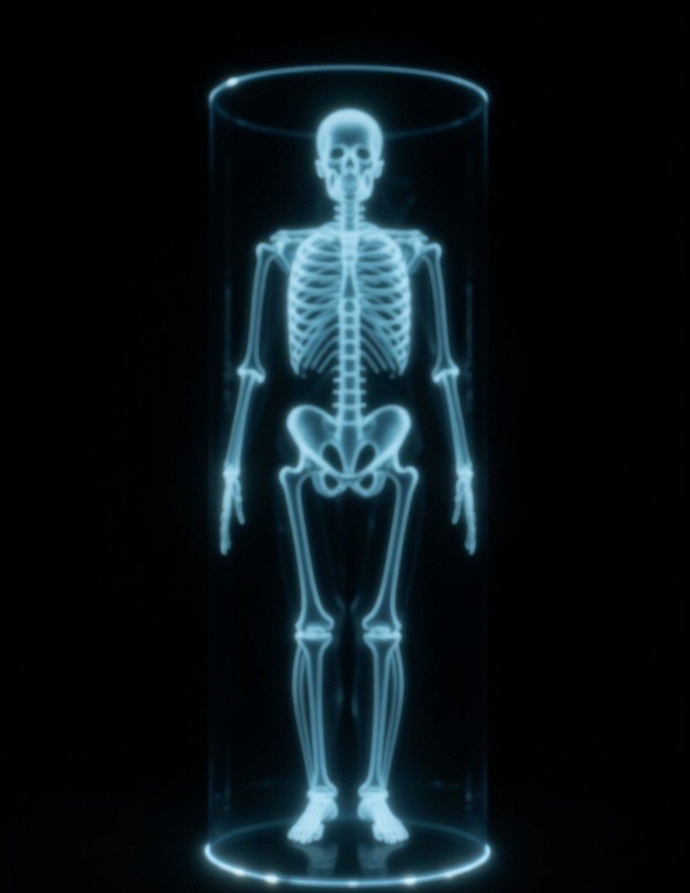

01 / 三件事
让骨头受力、让身体够料、让家里不滑
01
负重与抗阻：让骨头“受力”
每周约 150 分钟中等强度负重运动（快走、慢跑、爬楼梯），配合每周 2–3 次抗阻训练。骨头是“用进废退”的器官。平衡训练（太极拳等）对减少跌倒同样有价值。
02
营养：钙、维生素 D、蛋白质
钙与维 D 是基础；蛋白质尤其重要——肌少症和骨质疏松常同时存在（一般建议 1.0–1.5 g/kg/天，需按营养状态个体化）。
03
环境：把家改成“不容易摔”
清掉地面杂物和电线、卫生间加扶手与防滑垫、夜里留一盏小灯、把常走的路走顺。花费很小，收益远大于骨折后补救。
02 / 部位
一次跌倒，塌的不只是一块骨头
脆性骨折有三个高发部位，后果完全不同——而最隐蔽的那个，恰恰在脊柱。

椎体最隐蔽
髋部最凶险
腕部最早前哨
01
椎体 · 最隐蔽
可能没有明显外伤，只是腰背痛了几天；也可能只是身高悄悄少了 3 厘米、背越来越驼。
02
髋部 · 最凶险
骨折后一年内死亡率约 20–30%，即使手术成功，相当一部分人也回不到骨折前的行走能力。
03
腕部 · 最早的前哨
常发生在 50–60 岁，一次撑地就断。它本身不致命，但提示骨量已在下坡。
03 / 自测
1 分钟，给家里老人测一测
勾选符合的项目，下方会给出风险档位与下一步建议。本自测仅供科普参考，不能替代诊断。